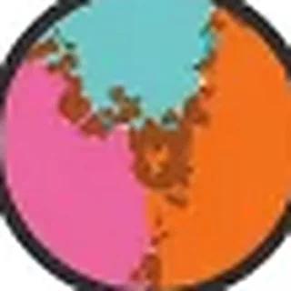

Encyclopédie › Marvel › Lieux et dimensions

Yesod: The Beyond
En français : Yesod : l’Au-delà
Salle des Machines
À vérifier1ʳᵉ apparition · Marvel Super Heroes Secret Wars #1 (1984)7 relations
Biographie
Yesod: The Beyond, Salle des Machines. Moteurs de Concordance, restes du Second Cosmos. Demeure des Beyonders (Conseil Oméga, Rois d’Ivoire).
Origines
Sa première apparition remonte à Marvel Super Heroes Secret Wars #1 (1984), sous la plume de Jim Shooter et Mike Zeck. Autres noms connus : Beyond-Realm "Beyonderverse,", Realm of the Beyonder et Womb-Space.
La salle des machines du cosmos, où siègent le Conseil Oméga et les Rois d’Ivoire.
Apparitions
7 apparitions recensées sur le wiki Marvel.
Premières apparitions : Marvel Super Heroes Secret Wars #1, Marvel Super Heroes Secret Wars #10, Secret Wars II #3, Secret Wars II #5.
Apparitions clés : Secret Wars #1 (1984), Defenders: Beyond #2 « Yesod » (2022).
Apparitions les plus récentes : Fantastic Four #319, Secret Wars II #9, Secret Wars II #8, Secret Wars II #5.
Où le lire
- Secret Wars #1 (1984)
- Defenders: Beyond #2 « Yesod » (2022)
Relations

Beyond Realm
Lieux et dimensions · espace sauvage blanc
Beyonders
Entités abstraites · seigneurs de l’Au-delà
Ivory Kings
Groupes · les seigneurs blancs

Multiversity
Cosmos et firmaments

Omega Council
Groupes · les gardiens du moteur
Omega Force
Forces et énergies · la source des Beyonders

Second Cosmos
Cosmos et firmaments · le premier multivers, origine de la Force Oméga